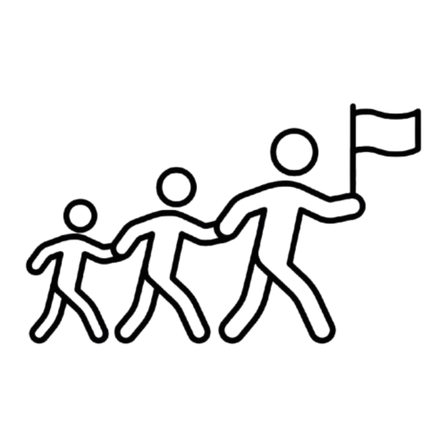

Communication
I exhibit strong communication skills.
I love to meet new people, and am both a leader and a listener.
I speak with clarity and confidence, and am comfortable
with asking for help when necessary.
I have debate experience, competing in numerous tournaments,
and so I am proficient in public speaking, logic, and preparation.
Leadership

I am a confident and considerate leader.
I have strong communication skills, and am comfortable with holding
myself and others accountable for our actions.
I can be the world's biggest hypeman, building others up,
while still being stern when necessary.
I understand the importance of acting with integrity and humility,
and putting trust into others.
I was the leader of my section in marching band
and an officer of my high school's code base club.
Commitment

When I commit to something, I can be counted on to stick with it
until the job is complete.
I reliably give everything my maximum effort and persevere
even through difficult circumstances.
I exhibit this skill in both the workplace and my daily life,
such as my commitment to the gym or to marching band.
Coursework

I've taken a myriad of high level courses:
Physics: Mechanics + Electricity & Magnetism
Integral, Differential, and Multivariable Calculus + Linear Algebra
Object Oriented Programming + Data Structures & Analysis